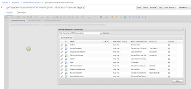

So far we have posted a number of articles describing the jBPM Workitem Repository and its features but there was little mention about its actual content and the powerful integration capabilities it brings to your business processes.
Currently the workitem repository includes 25 different workitem groups and a total of 57 individual workitem handlers. These include various integration services with Google, Dropbox, IBM, Twitter and many more. New workitems can easily be added as was described in this previous article. Given that the number of workitems in growing at a steady pace we thought to start showcasing them with simple working examples that you can take and use to start implementing your custom integration solutions.
In this article we will focus on two workitem groups, namely GitHub and Slack:
For our simple example to showcase these workitems we will create a business process which fetches all open issues from one of your GitHub repositories, accumulate them into a message and then send this message to a specified channel on Slack notifying you of these open issues and give you simple links to each so you can start addressing them.
First let’s look at the pre-requisites for each of the workitems. To start using GitHub workitems the required information is your login data, namely your username and password. For this example we will use the
FetchIssuesWorkitemHandler where you will also need to know the name of the repository where you want to fetch the issues from.
To start using the Slack workitem handlers you need to first create a Slack App. Follow
this link to get started with that. Once you create your app make sure to enable OAuth so Slack will create an access token for it. This access token is then passed to the workitem handler as it needs it for authentication with the Slack service. The workitem handler we will use here is
PostMessageToChannelWorkitemHandler which also needs the name of one of the channels your slack app has access posting messages to.
To follow this example we also assume that you have the KIE workbench+server set up and ready but if you don’t you can follow
this article to do that literally in minutes. We also assume that you have an existing GitHub repository set up with some real or test issues defined. If you don’t you could use
this test one.
With our KIE worbench running log in and create a new project. Within this project create a new business process (with legacy editor as it’s currently only one capable of installing workitems from a repository). Click on the repository icon in the process editor menu bar and connect to your running service repository
 |
| Installing workitems from workbench legacy bpmn2 editor |
Find the two workitem handlers we mentioned earlier, namely FetchIssuesWorkitemHandler and PostMessageToChannelWorkitemHandler and click on the little wrench icon next to each to install them into your workbench. Note that the install also updates your project pom with all necessary maven dependencies to execute these workitems as well as your projects deployment descriptor xml.
To finish the setup we do need to edit the projects deployment descriptor slightly, passing in our login information to the github workitem as well as the Slack access token created to the slack workitem so they can authenticate with their respective services correctly:
For this in the project explorer navigate to your projects /src/main/resources/META-INF directory and edit the kie-deployment-descriptor.xml file. Note that under the work-item-handlers element in this xml file the workitem installer has already added the definitions of two workitem handlers we want to use, however it needs to be slightly changed to add the sensitive info we talked about:
So for the GitHub handler we need to add:
<identifier>new org.jbpm.process.workitem.github.FetchIssuesWorkitemHandler(“YOUR_GITHUB_LOGIN_NAME“, “YOUR_GITHUB_LOGIN_PASSWORD“)</identifier>
and for the Slack handler:
<identifier>new org.jbpm.process.workitem.slack.PostMessageToChannelWorkitemHandler(“YOUR_SLACK_APP_ACCESS_TOKEN“)</identifier>
Note that in the image below I have cut off the sensitive info as I used my personal login information when making the demo
Modifying the kie deployment descriptor
Now we should be all set up to create our business process. You can download or import the one used in this example from
this Gist.
The example process first fetches all open issues from our testrepo GitHub repository. This list is then saved in a process variable which the script task iterates to create a message. The created message is then used by the Slack workitem to connect to your defined channel and create a new post to it.
You can now build and deploy your worbench process and start and instance of our example process
Once the process has completed execution you should see in your Slack channel the result message:
And that’s it :) Let us know what other workitems you would like to see featured next.


{kind=link}
{kind=link}
{kind=link}
{kind=link}
{kind=link}
{kind=link}
{kind=link}
{kind=link}
{kind=link}